Qu'est-ce qu'un boss et qui sont-ils ?
Dans Elden Ring, les boss représentent les défis les plus marquants du jeu. Chacun possède son propre style de combat, une histoire unique et un rôle précis dans le monde de l'Entre-Terre. Affronter ces adversaires demande de l'observation, de la stratégie et une bonne maîtrise du gameplay. Ils constituent le cœur de l'expérience Elden Ring : puissants, impressionnants et mémorables, ils marquent chaque étape de l'aventure.
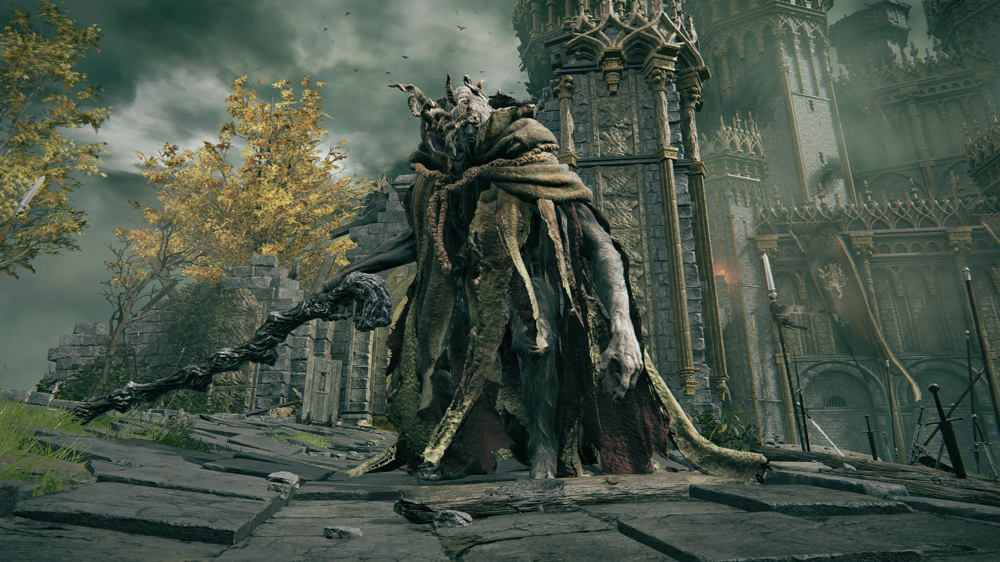
Margit, le Déchu
Premier grand obstacle du jeu, Margit ouvre la voie au château de Voilorage. Agile, imprévisible et armé d'armes spirituelles, il initie le joueur aux combats exigeants d'Elden Ring.
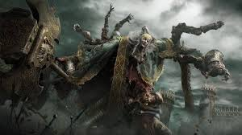
Godrick le Greffé
Demi-dieu tyrannique obsédé par la puissance, Godrick renforce son corps en greffant d'autres membres sur lui-même. Son combat combine attaques physiques, vent, et un second phase spectaculaire avec un dragon.
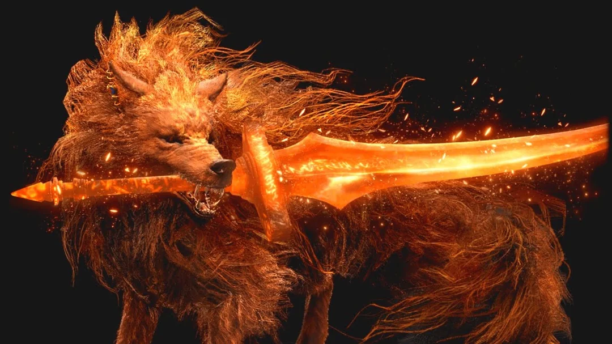
Red Wolf of Radagon
Bête magique rapide et agressive, le Loup Rouge combine morsures, bonds fulgurants et sorts dorés. C'est un boss nerveux qui demande une bonne esquive et du timing.
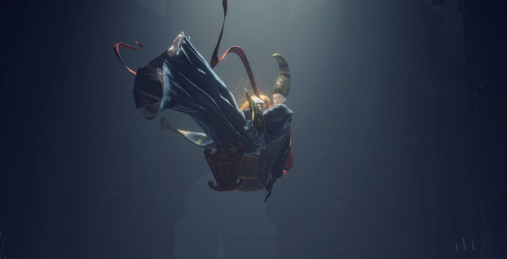
Rennala, Reine de la Pleine Lune
Rennala oppose d'abord une phase énigmatique centrée sur la magie et les illusions, puis un duel dans un espace astral. Maîtresse de la sorcellerie, elle privilégie les attaques à distance et les invocations.
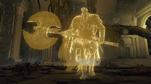
Godfrey
Version spirituelle du premier Seigneur de l'Entre-Terre, cette forme illusoire teste la détermination du joueur. Plus rapide et plus agressif que sa forme humaine, il annonce le véritable duel à venir.
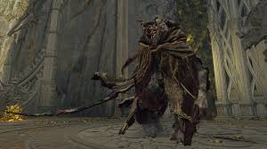
Morgott, Roi Présage
Véritable souverain de Leyndell, Morgott reprend le rôle laissé par Margit sous sa vraie identité. Plus puissant, plus rapide et maître des armes sacrées dorées, il constitue un combat emblématique de la progression.
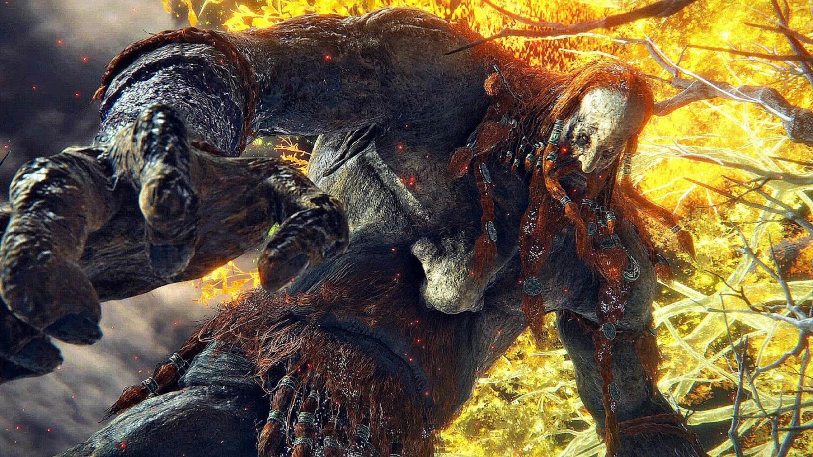
Fire Giant
Dernier survivant de son peuple, le Géant de Feu est un colosse tragique lié à la Flamme de l'Ancien Monde. Son combat repose sur une énorme force brute combinée à des attaques de flammes dévastatrices.
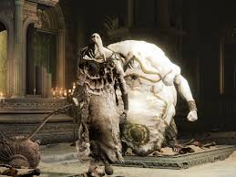
Godskin Duo
Ce duo infernal combine un Apôtre et un Noble Peau-de-Dieu. Ensemble, ils alternent attaques rapides, magies noires et pressions permanentes, obligeant le joueur à gérer deux adversaires très complémentaires.
 Maliketh, la Lame Noire
Maliketh, la Lame Noire
Gardien du destin de l'Anneau, Maliketh est un guerrier rapide et féroce. Sa seconde phase en Lame Noire inflige des malédictions diminuant la vie du joueur, rendant le duel particulièrement intense.
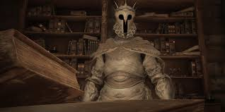
Sir Gideon Ofnir
Gideon se bat en utilisant la magie tirée de nombreux boss affrontés précédemment. Stratège et érudit, il mise sur sa connaissance du joueur pour lancer un large éventail de sorts puissants.
 Godfrey-Hoarah Loux
Godfrey-Hoarah Loux
Libéré de son rôle de Seigneur, Godfrey redevient Hoarah Loux, guerrier brutal et sauvage. Son combat se transforme en affrontement bestial, basé sur la force pure et des projections au corps à corps.
 Radagon de l'Ordre d'Or
Radagon de l'Ordre d'Or
Figure légendaire et énigmatique, Radagon utilise un mélange puissant d'arts martiaux et de magie sacrée. Son combat sert de prélude au duel final, mêlant précision, vitesse et attaques lumineuses destructrices.
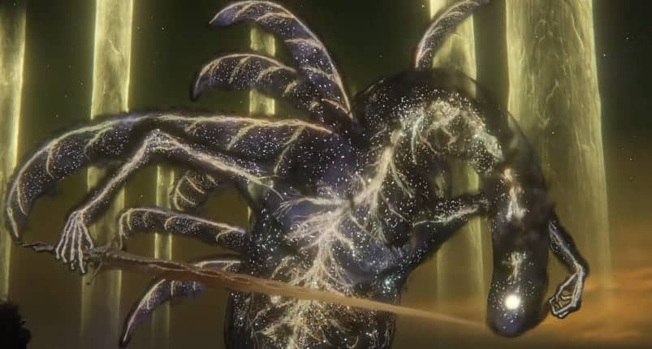
Elden Beast
Être cosmique et ultime gardien de l'Anneau d'Elden, l'Elden Beast représente la forme réelle de la volonté supérieure. Son style de combat mêle magie, lumière sacrée et mouvements majestueux dans un espace ouvert.
 Mogh, Seigneur du Sang
Mogh, Seigneur du Sang
Mogh règne sur la dynastie sanglante de Mohgwyn et utilise la magie du sang pour infliger des dégâts continus. Son rituel de sacrifice en seconde phase est l'une des mécaniques les plus dangereuses du jeu.
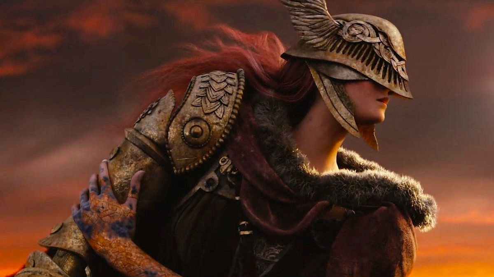
Malenia, Épée de Miquella
Considérée comme l'un des combats les plus difficiles du jeu, Malenia possède une grâce mortelle et une capacité unique de se soigner en touchant le joueur. Sa seconde phase libère une forme ailée, encore plus dangereuse.